This document describes the DOME Onboarding process and its associated Digital Identity Management system, used to interact with DOME services.
Overview of Onboarding and Service Certification
Before your company can publish Product Offerings in the DOME Marketplace, the following steps have to be performed:
Onboarding of the company in the DOME Marketplace, requiring:
Identification and verification of the legal representative and the right of representation.
The employee performing the onboarding process has to be able to demonstrate to the DOME Operator that it has the powers required to act on behalf of your company for the process of onboarding in DOME. The employee can be a legal representative or an employee "nominated" by a legal representative for the specific purpose of performing the process of onboarding in DOME.
Identification of legal person (the company) on the basis of documents and data submitted, and verification of the submitted information on the basis of information obtained from a reliable and independent source.
You have to demonstrate that your company is incorporated and that is has basic legal capacity to act in the EU internal market.
Certification of each Product Offering, required to be able to publish a product offering in the marketplace. It is done for each product offering.
For each product offering that you want to publish in the DOME Marketplace, your company has to demonstrate that the product complies with the requirements setup by DOME (as per the requirements from the European Commission and Member States).
We describe in this document both processes, because they are very interrelated: you have to prove some facts about your company and its product offereings before they are published in the DOME Marketplace. The mechanisms for those proofs are very similar.
Onboarding of your company in DOME
If your company is already using eIDAS certificates (e.g., for digitally signing PDFs, invoices or other types of documents), then the process can be performed digitally. Using advanced or qualified signatures facilitates a fully digital and automated cross-border onboarding process, and at the same time provides a reasonable balance between automation, convenience, and level of legal certainty and security.
However, there are still countries in the EU which are lagging in the widespread use of eIDAS signatures. This is expected to change soon, given the push provided by the introduction of eIDAS2 and thanks to a timely implementation of the European Digital Identity Wallet by the Member States (they will be obliged to issue Digital Identity Wallets within 12 months of the entry into force of the Regulation).
This is the reason why, in the mean time, we provide two mechanisms for onboarding in DOME:
A digital and automated cross-border onboarding process based on signatures under the current eIDAS legal framework and aligned at the same time with eIDAS2, which provides a reasonable balance between automation, convenience, and level of legal certainty and security. This is the preferred mechanism.
A “classical” manual process, which is more cumbersome, lengthy, and inconvenient than the digital one, but is available as an exceptional temporary measure to those companies not yet at the required level of digitalisation in the eIDAS framework and which are not capable of using eIDAS digital signatures.
The diagram below describes an overview of both processes
Overview of onboarding processes
Service Certification in DOME
TBD.
Digital onboarding process
The digital onboarding process is the following:
A legal representative of your company authorises an employee to perform the process of onboarding. This is done by issuing a LEARCredential to the employee.
The authorised employee starts the onboarding process in the DOME onboarding portal, authenticating with the LEARCredential. The employee completes the forms presented by the DOME portal, and the onboarding process is completed.
Both steps are described below.
Issuing the LEARCredential
Go to the DOME Issuer portal
The DOME Issuer portal is located at https://dome.mycredential.eu/ and below is an image of the screen.
DOME Issuer portal
The site is intended for Legal Representatives of companies who want to issue one or more LEARCredentials to one or more employees of the company. A LEARCredential is a type of Verifiable Credential which enables an employee, nominated by a legal representative, to act on behalf of an organisation with restricted powers with respect to third-parties.
The issuer (the creator) of the LEARCredential must be a legal representative of the company. The legal representative will sign the LEARCredential with an eIDAS digital certificate, which can be either a personal one or a certificate of representation.
The receiver of the LEARCredential (both the subject and holder of the credential) can be any employee (or contractor) of the company. The legal representative will delegate a restricted set of powers to that person. Those restricted powers are included inside the credential and can be verified by any Relying party to whom the holder presents the LEARCredential.
If you are a legal representative of the company and you have an eIDAS certificate installed in your PC, click on the yellow button to start the process:
Go to Issuer
Select the eIDAS certificate to use
Once you click the button, you will be directed to the page of the DOME Issuer to start creating LEARCredentials.
The browser will request that you select the certificate to use, with a screen like the following:
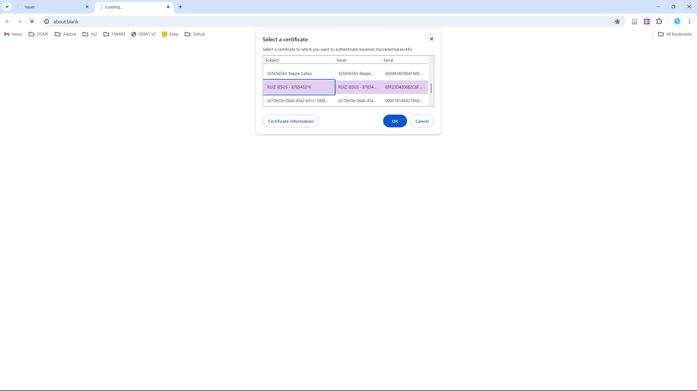
Select certificate
Register for the service
The first time you enter, you must register and verify your company email, using the following screen.
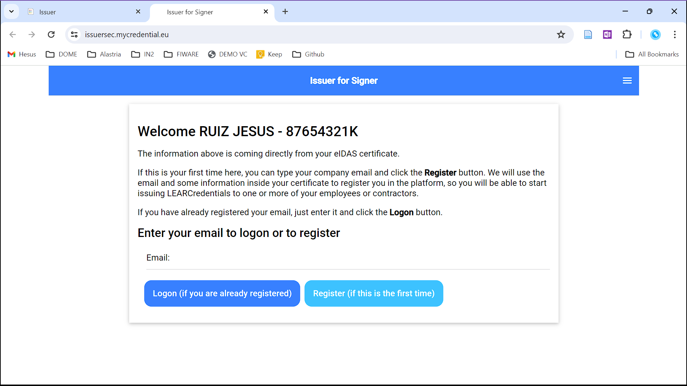
Register email
Enter your email address and click the button "Register (if this is the first time)".
You will receive an email requesting confirmation, which is needed before you can logon in the system.
If you do not receive the email (from support@mycredential.eu), please check in spam just in case your email client has automatically classified it as spam.
Once you have verified your email you can logon in the system using the same screen as above.
List of LEARCredentials
After logging in for the first time, you will see an empty screen like the following. Click on the button to create a new LEARCredential.
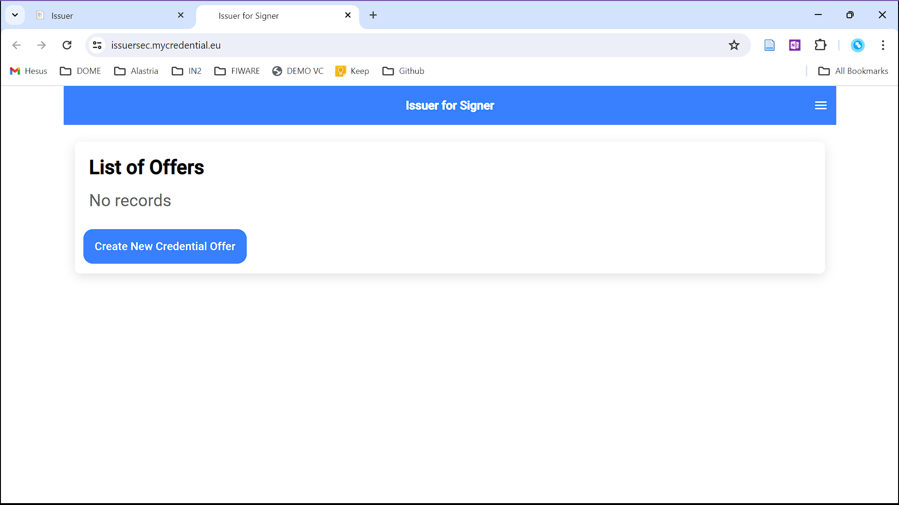
List of Offers 1
LEARCredentialForm
A form to fill the data of the LEARCredential appears, like the following:
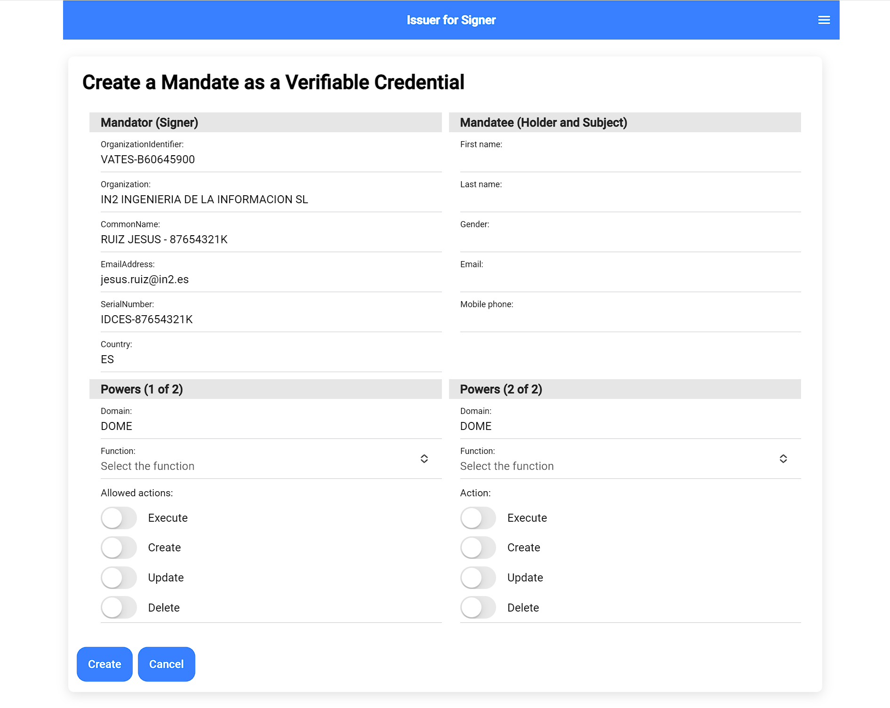
LEARCredential form
The form has the following sections:
Mandator
The Mandator is the person delegating a restricted set of powers onto an employee (the Mandatee). This part of the form is pre-filled with information coming from the eIDAS certificate that was used to enter into the application, plus the email address that was registered and verified.
You do not have to enter anything else in this section.
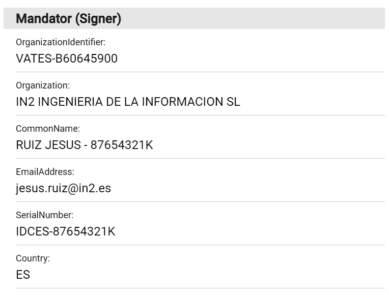
Mandator
Mandatee
The Mandatee is the employee (or subcontractor) who receives a restricted set of powers to act on behalf of the company with third-parties. In our case, the employee will be empowered to perform the Onboarding process in DOME, and maybe to create Product Offerings in the Marketplace.
You have to fill the data corresponding to the employee that you want to nominate to perform the Onboarding process. After creating the LEARCredential, the employee will receive a notification in the email address that you entered in the form.
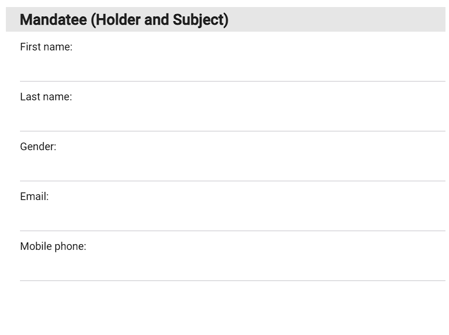
Mandatee
Powers
These are the specific powers that the Mandator (you) is delegating on the Mandatee (the employee).
The LEARCredential is a general purpose electronic Mandate, but in our case we need only two powers:
Execute the Onboarding process in DOME
Create/Update/Delete one or more Product Offerings in the DOME Marketplace
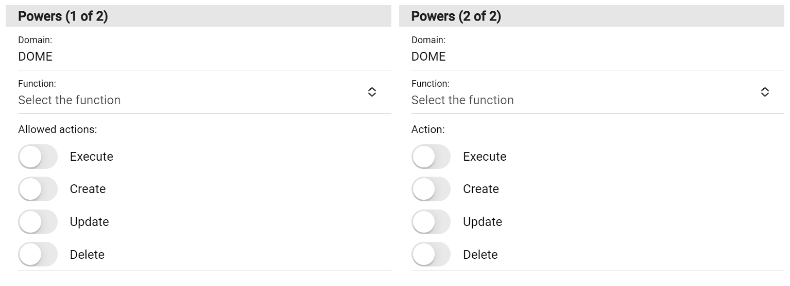
Powers
You can assign each power to a different employee (with one LEARCredential for each employee), or both powers to the same employee (with one LEARCredential including both powers). You can even generate more than one LEARCredential with the same or different powers to one or more employees. This is up to you and how you want to distribute the powers among your employees.
The Mandate in the form of a Verifiable Credential behaves like its paper counterpart with regards to these properties.
For Onboarding, make sure that the employee receives at least the Onboarding power:
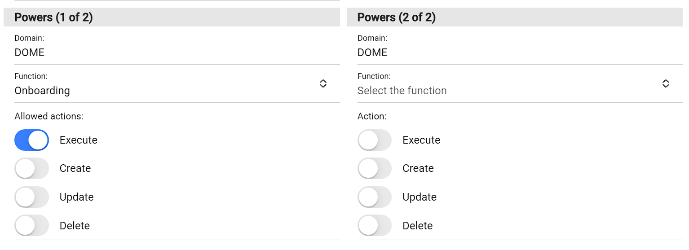
Onboarding
Create a first version of the LEARCredential
Press the "Create" button at the bottom of the form. This will take you to a screen with the machine-readable representation of the new LEARCredential. Do not worry, you do not have to understand this, but if you do (or somebody in your company) it is a good way to see the actual contents that will go inside the LEARCredential, before sending it to the employee.
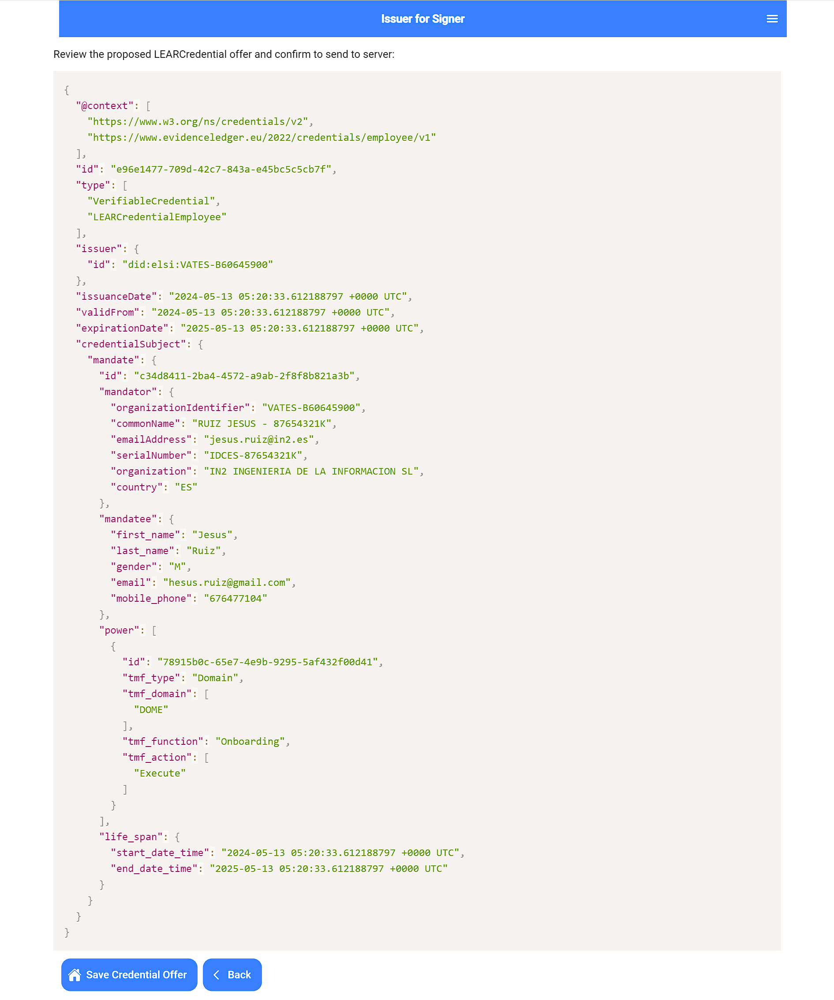
JSON model Onboarding
Click the button at the bottom of the screen to save the draft version of the credential and send a notification to the target employee via email.
List of created LEARCredentials
You are taken back to the list of LEARCredentials that you have created. If this is the first time that you have created a credential, thee screen looks like the following.
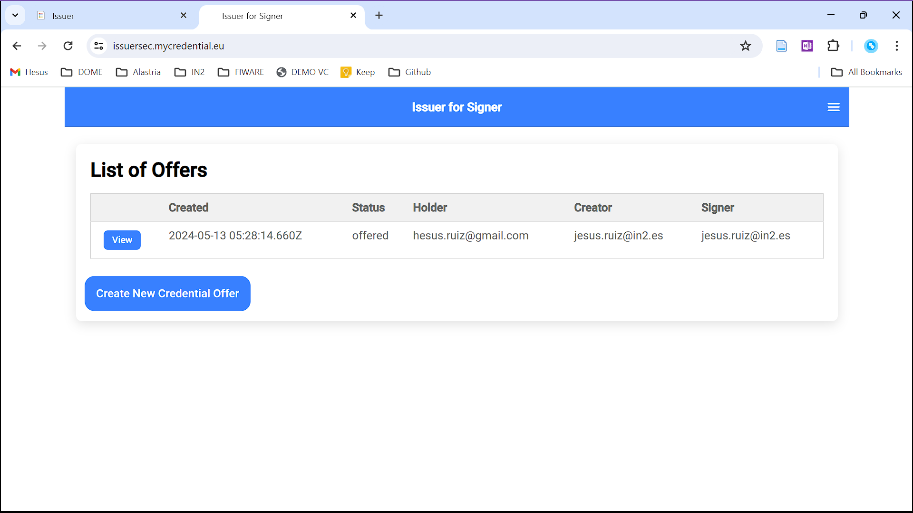
List of one credential
The button "View" at the left of every item allows you to review the credential, and also to send a reminder email to the target employee, in case the employee has not yet retrieved the credential.
LEARCredentials have three states:
offered: A draft version of the credential has been created with all required information about Mandator, Mandatee and the Powers of Representation. A notification via email has been sent to the employee who will receive the powers. The name offered denotes that the employee has to accept the credential and load it to the Wallet of th eemployee.
tobesigned: The employee has accepted the LEARCredential, after reviewing the information contained in it. This step is necessary because the LEARCredential contains cryptographic material which will allow the employee to authenticate to DOME, and that cryptographic material can only be generated by the Wallet of the employee, to ensure the solo control of the private key.
signed: After the employee accepts the credential, you have to sign it with your eIDAS certificate. After your signature, the credential is signed and ready to be loaded by the employee in her Wallet and use it.
The employee receives a notification for the LEARCredential
The employee receives an email notification like the one below.
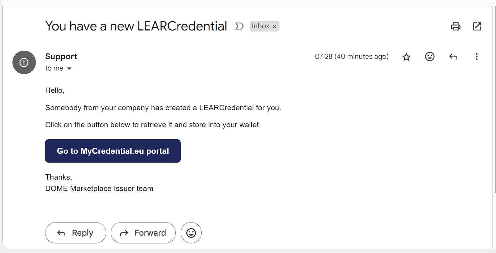
Employee email notification initial
When clicking on the button, the employee is directed to the DOME Issuer portal to review and (possibly) confirm the LEARCredential.
The screen that the employee sees is similar to the one below.
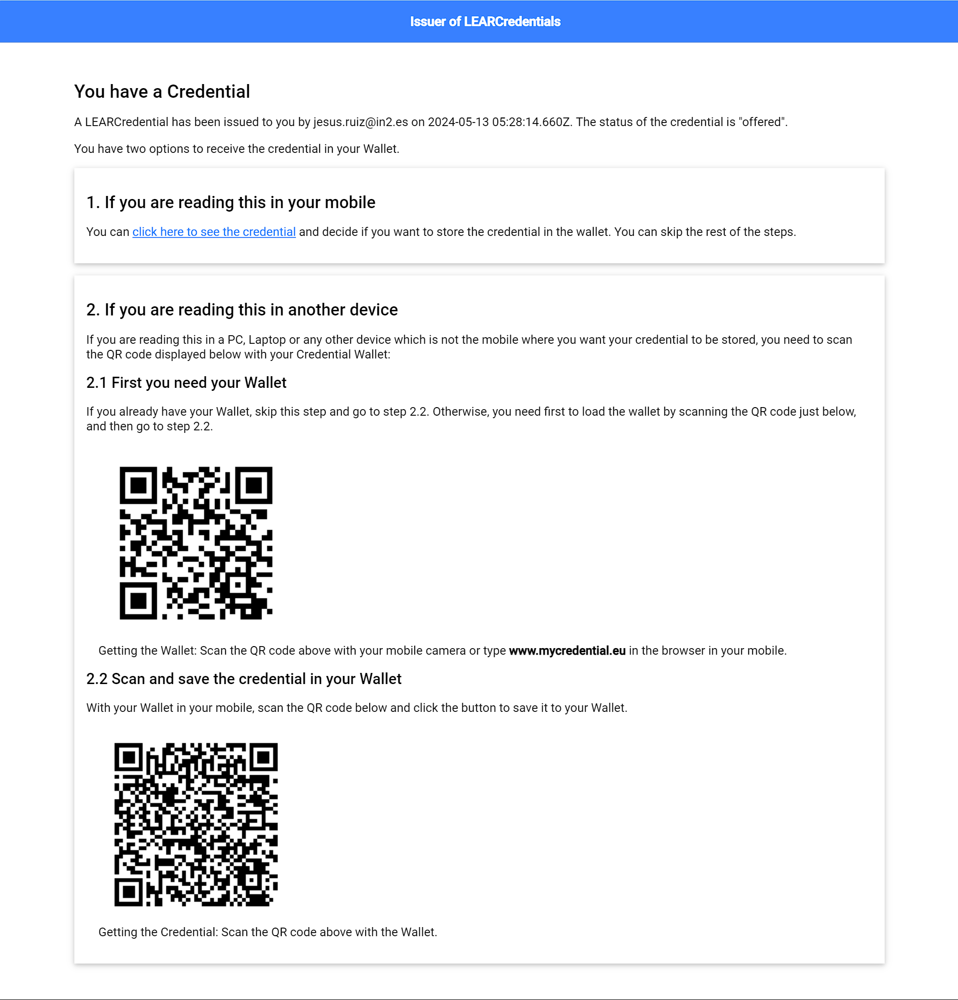
Employee Issuer portal initial
The employee has several possibilities for receiving and using the LEARCredential. The employee can use any Wallet which is compatible with the current EDIW implementation.
However, while the market matures, DOME offers a reference implementation of a Wallet which is the one we will use for the description of the onboarding process.
The DOME Wallet is a web application that can be used in several types of devices: mobile, tablet, PC. It supports iOS, Android, Windows, Mac, Linux and other environments where a standards-compliant implementation of an Internet browser is available (like ChromeOS).
The functionalities of the DOME Wallet are not as comprehensive as in native implementations, but they are enough to support the requirements of the DOME Marketplace.
For this tutorial, we will use the DOME Wallet and for simplicity we will assume the employee uses the Wallet in the same device that was used to present the previous screen.
In order to proceed, the employee clicks on the following link (even if the device is not a mobile):
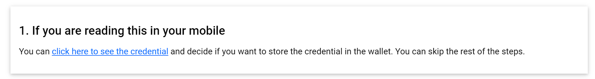
Employee Issuer portal link
The employee reviews and confirms the LEARCredential
When clicking the above link, a new Wallet is automatically provisioned for the employee in the device that the employee is using, and the Wallet presents the draft version of the LEARCredential to the user.
The employee sees a screen that looks like the following.
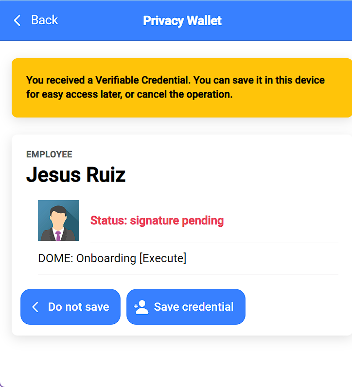
Wallet review offer
The Wallet displays a preview of the LEARCredential. The credential is marked with a red warning stating that the credential is not yet valid because it is missing the signature from the legal representative. This signature will be performed later.
The employee has to accept the credential by clicking the button "Save credential". Once this is done, the credential changes to the status tobesigned and is ready to be signed by the legal representative.
The legal representative signs the LEARCredential
The legal representative has to use the eIDAS certificate to sign the LEARCredential and there are different ways to perform this signature. We describe here the most common scenario, where the legal representative has installed the certificate in her PC. This is the typical way to sign PDFs (e.g., with Acrobat Reader), and in the same way, the legal representative has to use a program in her PC to sign the LEARCredential.
DOME provides such a program, called "elsignerw". Installation is very simple and involves simply to download the binary and running it whenever is needed.
Manual onboarding process
As in the digital case, we also require that the natural person driving the onboarding process should be either a legal representative of the participant or a natural person that has been delegated by a legal representative at least the powers required to perform the onboarding process on behalf of the legal entity.
Without digital signatures, the process is the following:
Task
Mechanism
A Legal Representative of the company authorises an employee to perform the process of onboarding
The legal representative puts a handwritten signature in a document including the identification of the employee and describing the specific powers that the employee has: onboarding in DOME.
In addition, the legal representative provides to the employee an authentic document with the Powers of Attorney proving that the signer of the previous authorisation document is a legal representative of the company.
The authorised employee starts the onboarding process in the DOME portal
The employee presents the document with the authorisation, to prove that she has the power to act on behalf of the company for the purpose of onboarding in DOME
DOME verifies that the employee has the power to act on behalf of the company for the purpose of onboarding
Verifications are manual: some employee of DOME has to perform, in a trusted manner, the following:
Verify that the document with the Powers of Attorney is authentic (probably checking in the business registry of the country of incorporation of the company).
Verify that the signature in the authorisation document corresponds to the legal representative (eg. is not a picture copied from another document). This is very difficult, unless the legal representative is contacted directly by the DOME employee.
Verify that the authorisation document is authentic (has not been tampered with since it was signed by the legal representative). This is very difficult, because an unsigned PDF can be modified easily.
Verify that the powers inside the document are the ones required to perform onboarding in DOME.
Verify that the person trying to onboard is the same identified in the authorisation document. The DOME employee has to request the national identity document of the employee and check against the authorisation document.
Once verifications are done, the DOME employee has to enable access to the DOME onboarding portal to the company employee.
The employee completes the onboarding process in the DOME portal
Filling forms in the DOME portal and uploading required additional documents
The LEARCredential as Powers of Representation
The LEARCredential is a machine-readable document representing a Mandate or Powers of Representation. The format used in DOME is a Verifiable Credential using an eIDAS signature to bind the mandate data with the real-world identity of the issuer of the credential.
We base our design in the [[RPaM-Ontology]], which is a project started in 2018 by the Directorate-General for Informatics (DG-DIGIT) of the European Commission, funded by the ISA Programme, to organise and support the development of an ontology about the Representation of Powers and Mandates, from now on the RPaM Ontology.
We adapt the results of that project, with simplifications and specialisations, to the concrete environment where we use the LEARCredential. To facilitate the job of the reader of this document, in some sections we copy literal sentences from the RPaM Ontology project, and adapt the texts to our requirements. However, the reader is encouraged to access the original documents for more details and understand the original approach, including the RPaM Ontology Glossary.
The Mandate
According to the RPaM Glossary, a "mandate is a record that describes the terms under which a mandator grants a representation power to a mandatee".
The conceptual model for a mandate in DOME is represented below:
mandate
The mandate is composed of three related objects described below: mandator, mandatee and power. The mandate object is signed with an advanced or qualified signature using an eIDAS certificate.
mandator
The object mandator identifies the employee of the company who is delegating a subset of her powers on the mandatee.
The mandator is either:
a legal representative of the company, according to the official records associated to the incorporation of the organisation (e.g., the business registry of the country of incorporation); or
an employee who is a mandatee in another mandate where the mandator is a legal representative of the company. We do not support more than two levels of delegation.
In DOME, the Onboarding process requires that the mandator is the legal representative of the company, to ensure an appropriate level of legal certainty.
Other processes (after onboarding is completed), like creating a ProductOffering, can use any of the above options for the mandator, subject to the limitation of a maximum of two levels of delegation.
mandatee
The mandatee is the person granted with the power to represent (and act as) the company in some specific actions with third-parties. The powers granted to the mandatee must be a subset of the powers of the mandator. For example, an employee (the mandatee) can be empowered by the legal representative of the company (the mandator) to perform the onboarding process in DOME.
The object mandatee identifies the employee on whom a subset of powers is delegated. The mandatee object contains:
A set of attributes of the employee which are required by the specific use case where the LEAR Credential will be used, for example to onboard in the DOME ecosystem and for creating a ProductOffering in the marketplace. Those attributes can be considered equivalent to the fields that would be filled in a form when a "classical" PDF document would be used to authorise an employee.
A public key associated to the employee and where the employee is the sole controller of the associated private key. This is required to enable the use of the LEARCredential containing the mandate as an efficient, scalable and secure authentication and authorisation mechanism.
The private key controlled by the employee is used to prove to Relying parties receiving the LEARCredential that the holder and presenter of the credential is the same person identified in the mandatee object.
We support two mechanisms for the public key in the mandatee object:
Using a did:key where the employee controls the private key associated to the did:key.
Using an eIDAS certificate owned by the employee.
The details of how the public key is bound to the identity of the mandatee can be found later in this document.
power
This object is a list of each specific power that is delegated from the mandator to the mandatee. The powers must be concrete and as constrained as possible, and must follow a taxonomy with the semantics well specified.
In DOME, we have specified a power taxonomy targeted at the interactions with the DOME Federated Marketplace, supporting not only the onboarding process but also any other interaction after onboarding. The system uses the taxonomy to perform authentication and access control based on the LEARCredential presented by users. This means that the actions are well defined, homogeneous and standardised for the ecosystem. We are basically replacing the current mechanisms for Mandates (e.g., paper or PDF) with a more efficient, machine-processable representation in the form of a Verifiable Credential.
Our Power Taxonomy could be generalised to other actions involving private sector companies, but it is out of scope of this version of the document.
Mapping to a Verifiable Credential
We now describe the mapping of the conceptual model into the concrete representation of a Mandate in a LEAR Credential, and more specifically to the jwt_vc_json representation (VC Signed as a JWT, Not Using JSON-LD), which is the one currently used in DOME.
The mandate is represented in the LEAR Credential as an object inside the credentialSubject object. An example of a complete LEARCredential is the following:
In the above example, we have specified that the mandator (the legal representative of the company) has delegated to the mandatee (the employee who will be the owner of the LEAR Credential) one single power to access services in the DOME ecosystem (specified with the fields tmf_type and tmf_name) with the specific capability to perform the onboarding of the company in the DOME ecosystem (specified with the fields tmf_function and tmf_action). The actual data model, which can be used to express mor complex delegations is described below in more detail.
The mandate has an optional id field which can be used to identify the Mandate when the Verifiable Credential is used to represent a Mandate which exists in other systems like a centralised eMandate registry. When the Mandate is created with the Verifiable Credential, the id field of the mandate object can be ommitted and the id of the credential can be used to identify the Mandate, and revoke it if needed. To maintain privacy, the id field should not have any relationship with the rest of the data in the Mandate.
Similarly, the mandate has the optional fields validFrom and validTo which can be used when the credential represents a Mandate that exists externally. The typical use case is when the Mandate in the external system has a big life span and the issuer of the LEARCredential wants the credential to have a smaller life span. In any case, a Relying party receiving the LEARCredential should use the more restrictive life span when performing the verification checks. That is, it must use the biggest of the validFrom claims, and the smallest of the validTo claims.
Mandator
There are two possible cases for the Mandator:
The Mandator is the legal representative of the company. In this case, the claims in the mandator object are a subset of the fields in the subject object in the eIDAS certificate that the legal representative uses to sign the LEARCredential. The minimum set of fields are the ones in the example.
The Mandator is an employee who is the Mandatee in another LEARCredential. In this case, the data in the mandator object must be the same data that appears in the mandatee object of the related LEARCredential.
In this second case, the powerSource in the power object (see later) must be the LEARCredential which was used to delegate the powers to the mandator from the legal representative of the company.
Mandatee
The mandatee object contains a set of attributes of the employee which are required by the specific use case where the LEAR Credential will be used, for example to onboard in the DOME ecosystem and for creating a ProductOffering in the marketplace.
In DOME, the minimum attributes are title, first_name, last_name, email and mobile_phone.
In addition, the mandatee object contains a public key where the employee is the sole controller of the associated private key. There are two possible cases:
The employee wants to use her did:key where the employee controls the private key associated to the did:key. In this case, the id claim of the mandatee object is the did:key.
The employee wants to use her personal or professional eIDAS certificate. In this case, the mandatee object must include two claims: the id claim with the did:key corresponding to the public key in the eIDAS certificate, and the claim x5c with the certificate itsef (which also incudes the public key, but we require the id field for completeness).
Power
This object is an array where each element is a power that is delegated from the Mandator to the Mandatee. The fields of each power object are:
id: The identifier of the power, which must be unique in the context of the Credential where it is included. It can be used as a reference when performing access control, for example in the audit records to identify the specific power that was used to grant access to some protected resource.
powerSource (conditional): The Mandator draws the power from one (or more) sources of power, e.g. 1) a concrete Legislation; 2) a piece of evidence (as another Mandate, in which case the mandator was a mandatee in that other mandate) and/or 3) a Natural Person with a specific profession that invest him/her with the authority to order to a mandator with a specific role the creation of a mandate, e.g. a judge authorising a civil servant (a Mandator that is a Natural Person with the appropriate role) to create a mandate for a relative to represent an incapacitated person).
In DOME, there are three cases with specific sources of power:
When the Mandator is a legal representative of the company, and the LEARCredential is signed with the eIDAS certificate of representation of the legal representative. In this case, the powerSource claim can be ommitted as it is implicit in the eIDAS signature. Alternatively, the powerSource claim is an object with the following fields:
type, with value "eulaw".
evidence, with value "https://eur-lex.europa.eu/eli/reg/2014/910/oj".
When the Mandator is a natural person who is the Mandatee in another LEARCredential. The powerSource claim is an object with the following fields:
type, with value "LEARCredential".
format, with the value "jwt_vc_json".
evidence, with the LEARCredential where the Mandator is a Mandatee, in jwt_vc_json format.
When the Mandator is a legal representative of the company, but does not have an eIDAS certificate of representation, the Mandator can not sign the LEARCredential. In this case, there must be a trusted third-party which attests that the Mandator is effectively a legal representative of the company. This trusted third-party must perform the required due diligence to confirm the relationship, and then sign the credential with its eIDAS certificate.
In DOME, one of the trusted third-parties (trusted by DOME) is the DOME Operator itself, where the employees dedicated to the onboarding of participants perform the manual checks on the documentation provided by the Mandator/Mandatee, and then create and sign the LEARCredential.
In this case, the powerSource claim is an object with the following fields:
type, with value "attestation".
evidence, with value the eIDAS certificate of the attester.
In this case, the mandate object must contain an additional object called attester, identifying the entity that makes the attestation and with the same fields as the mandator object in the case where the Mandator signs the LEARCredential with an eIDAS certificate.
tmf_type: The type of power, which can be:
"Domain": The mandatee has access to the services (subject to the restrictions defined by action and function) provided by one or more organisations where the services have been classified as belonging to that domain. The classification of services is arbitrary and defined by the service providers. A typical scenario is when some service providers agree on a classification of the services that they provide in the context of an ecosystem (like DOME), and the possible domains are made public, including the mapping to a given set of services in each provider.
"Organization": The mandatee has access only to the services provided by one or more organizations, listed specifically in the power.
tmf_domain: Required when the tmf_claim has the value "Domain" or "Organization". It is an array with the names of the Domains or Organisations where the Mandatee is authorised to interact with this Mandate.
The names must be unique (e.g. via a namespace) to avoid potential clashes in different ecosystems.
In DOME, for the powers of onboarding in DOME and for creating a ProductOffering, the tmf_domain claim must be an array with a single item "DOME".
tmf_function: A string specifying the name of the function that the Mandatee can perform. The definition of the possible functions is done by the Verifier (the entity with which the Mandatee will interact with the LEAR Credential).
In DOME, the possible funcions are "Onboarding" and "ProductOffering", which enables the Mandatee to use the services provided by DOME to onboard organisations in the ecosystem and (if it is onboarded previously) to create a ProductOffering.
tmf_action: An array with the concrete actions belonging to the function that the Mandatee is allowed to execute.
In DOME, the possible actions are
"Execute" when tmf_function is "Onboarding".
Any combination of "Create", "Update" and "Delete" when tmf_function is "ProductOffering".
Glossary
As far as possible and in order to enhance consistency with the regulation, we use in this document the following definitions, which is essentially a subset of the definitions in Article 3 of the document [[eIDAS2.Regulation]] and in the original [[[eIDAS.Regulation]]].
This is the reason why in some definitions below the description refers to an article or section that does not exist in this document. We have decided to keep the definitions like in the original, as we think it does not limit the understanding of the concept.
electronic identification
means the process of using person identification data in electronic form uniquely representing either a natural or legal person, or a natural person representing a legal person;
electronic identification means
means a material and/or immaterial unit, including European Digital Identity Wallets or ID cards following Regulation 2019/1157, containing person identification data and which is used for authentication for an online or offline service:
person identification data
means a set of data, issued in accordance with national law, enabling the identity of a natural or legal person, or a natural person representing a legal person to be established;
electronic identification scheme
means a system for electronic identification under which electronic identification means, are issued to natural or legal persons or natural persons representing legal or natural persons;
user
means a natural or legal person, or a natural person representing a legal person using trust services, notified electronic identification means or European Digital Identity Wallets;
authentication
means an electronic process that enables the verification of the origin and integrity of data in electronic form;
identification
means an electronic process that establish an unequivocal relationship between a set of data and a natural or legal person;
validation
means the process of verifying that an electronic signature, an electronic seal, a European Digital Identity Wallet, an electronic identification mean, a relying party authorisation, person identification data, an electronic attestation of attributes or any electronic certificates for trust services is valid and has not been revoked;
zero knowledge proof
means cryptographic methods by which a relying party can validate that a given statement based on the electronic attestation of attributes held in a user's European Digital Identity Wallet is true, without conveying any data related to those electronic attestation of attributes to the relying party;
relying party
means a natural or legal person that relies upon an electronic identification means, including European Digital Identity Wallets, or a trust service, directly or through an intermediary, in order to provide services;
public sector body
means a state, regional or local authority, a body governed by public law or an association formed by one or several such authorities or one or several such bodies governed by public law, or private entity mandated by at least one of those authorities, bodies or associations to provide public services, when acting under such a mandate;
body governed by public law
means a body defined in point (4) of Article 2(1) of Directive 2014/24/EU of the European Parliament and of the Council (1);
signatory
means a natural person who creates an electronic signature;
electronic signature
means data in electronic form which is attached to or logically associated with other data in electronic form and which is used by the signatory to sign;
advanced electronic signature
means an electronic signature which meets the requirements set out in Article 26;
qualified electronic signature
means an advanced electronic signature that is created by a qualified electronic signature creation device, and which is based on a qualified certificate for electronic signatures;
electronic signature creation data
means unique data which is used by the signatory to create an electronic signature;
certificate for electronic signature
means an electronic attestation which links electronic signature validation data to a natural person and confirms at least the name or the pseudonym of that person;
qualified certificate for electronic signature
means a certificate for electronic signatures, that is issued by a qualified trust service provider and meets the requirements laid down in Annex I;
trust service
means an electronic service normally provided against payment which consists of:
(a) the creation, verification, and validation of electronic signatures, electronic seals or electronic time stamps, electronic registered delivery services, electronic attestation of attributes and certificates related to those services;
(b) the creation, verification and validation of certificates for website authentication;
(c) the preservation of electronic signatures, seals or certificates related to those services;
(d) the electronic archiving of electronic documents;
(e) the management of remote electronic signature and seal creation devices;
qualified trust service
means a trust service that meets the applicable requirements laid down in this Regulation;
conformity assessment body
means a body defined in point 13 of Article 2 of Regulation (EC) No 765/2008, which is accredited in accordance with that Regulation as competent to carry out conformity assessment of a qualified trust service provider and the qualified trust services it provides;
trust service provider
means a natural or a legal person who provides one or more trust services either as a qualified or as a non-qualified trust service provider;
qualified trust service provider
means a trust service provider who provides one or more qualified trust services and is granted the qualified status by the supervisory body;
electronic seal
means data in electronic form, which is attached to or logically associated with other data in electronic form to ensure the latter’s origin and integrity;
advanced electronic seal
means an electronic seal, which meets the requirements set out in Article 36;
qualified electronic seal
means an advanced electronic seal, which is created by a qualified electronic seal creation device, and that is based on a qualified certificate for electronic seal;
electronic seal creation data
means unique data, which is used by the creator of the electronic seal to create an electronic seal;
certificate for electronic seal
means an electronic attestation or set of attestations that links electronic seal validation data to a legal person and confirms the name of that person;
qualified certificate for electronic seal
means a certificate for an electronic seal, that is issued by a qualified trust service provider and meets the requirements laid down in Annex III;
electronic seal creation device
means configured software or hardware used to create an electronic seal;
qualified electronic seal creation device
means an electronic seal creation device that meets mutatis mutandis the requirements laid down in Annex II of [[eIDAS.Regulation]];
electronic time stamp
means data in electronic form which binds other data in electronic form to a particular time establishing evidence that the latter data existed at that time;
qualified electronic time stamp
means an electronic time stamp which meets the requirements laid down in Article 42 of [[eIDAS.Regulation]];
electronic document
means any content stored in electronic form, in particular text or sound, visual or audiovisual recording;
electronic registered delivery service
means a service that makes it possible to transmit data between third parties by electronic means and provides evidence relating to the handling of the transmitted data, including proof of sending and receiving the data, and that protects transmitted data against the risk of loss, theft, damage or any unauthorised alterations;
qualified electronic registered delivery service
means an electronic registered delivery service which meets the requirements laid down in Article 44;
European Digital Identity Wallet
means an electronic identification means which securely stores, manages and validates identity data and electronic attestations of attributes, to provide them to relying parties and other users of European Digital Identity Wallets on request, and which enables the creation of qualified electronic signatures and seals;
attribute
is a feature, characteristic or quality of a natural or legal person or of an entity;
electronic attestation of attributes
means an attestation in electronic form that allows the presentation and authentication of attributes;
qualified electronic attestation of attributes
means an electronic attestation of attributes, which is issued by a qualified trust service provider and meets the requirements laid down in Annex V;
authentic source
is a repository or system, held under the responsibility of a public sector body or private entity, that contains attributes about a natural or legal person and is considered to be the primary source of that information or recognised as authentic in Union or national law;
electronic archiving
means a service ensuring preservation of electronic data or documents in order to guarantee their integrity, the accuracy of their origin and legal features throughout the conservation period;
qualified electronic archiving service
means a service that meets the requirements laid down in Article 45g;
EU Digital Identity Wallet Trust Mark
means an indication in a simple, recognisable and clear manner that a Digital Identity Wallet has been issued in accordance with this Regulation;
strong user authentication
means an authentication based on the use of at least two authentication factors categorised as user knowledge , possession and inherence that are independent, in such a way that the breach of one does not compromise the reliability of the others, and is designed in such a way to protect the confidentiality of the authentication data;
user account
means a mechanism that allows a user to access public or private services on the terms and conditions established by the service provider;
personal data
means any information as defined in point 1 of Article 4 of Regulation (EU) 2016/679;
identity matching
means a process where person identification data or person identification means are matched with or linked to an existing account belonging to the same person;
offline service
means the capability of a user to electronically identify and authenticate with a third party with close proximity technologies irrespective of whether the device is connected to the internet or not in order to access a wide range of public and private services;